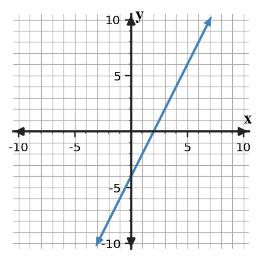
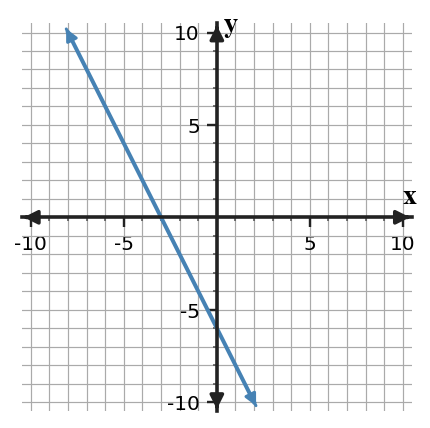
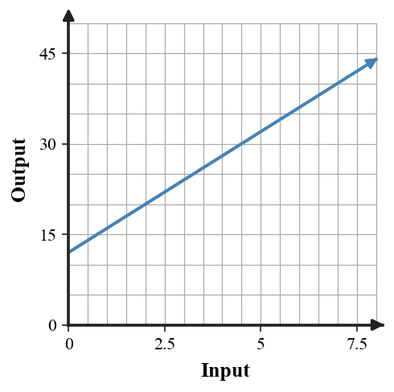

Unit 1 DOK 1.2 Intercepts and Starting Values V2
Name:
Show work and mark answers clearly.
1.
For the graph shown, identify the $x$-intercept and the $y$-intercept.

For the graph shown, identify the $x$-intercept and the $y$-intercept.

For the graph shown, identify the $x$-intercept and the $y$-intercept.
For the graph shown, identify the $x$-intercept and the $y$-intercept.

For the graph shown, identify the $x$-intercept and the $y$-intercept.

For the context graph shown, identify the starting amount and describe what the vertical intercept means in the situation.

For the context graph shown, identify the starting amount and describe what the vertical intercept means in the situation.

Which point in the table lies on the $x$-axis? Name the $x$-intercept.
| Point | $x$ | $y$ |
|---|---|---|
| A | -4 | 0 |
| B | 0 | 8 |
| C | 2 | 12 |
Which point in the table lies on the $x$-axis? Name the $x$-intercept.
| Point | $x$ | $y$ |
|---|---|---|
| A | -2 | 5 |
| B | 3 | 0 |
| C | 0 | 3 |